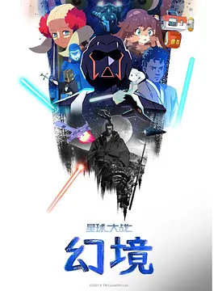

7.3
星球大战：幻境 第一季
Star Wars: Visions Season 1
2021
美国
评分 7.3
导演:
神山健治 / 今石洋之 / 崔恩映 / 水野贵信 / 五十岚祐贵
演员:
约瑟夫·高登-莱维特 / 刘玉玲 / 刘思慕 / 尼尔·帕特里克·哈里斯 / 亨利·戈尔丁
类型:
动作,奇幻,科幻
剧情简介
这部作品以九部独立短片的形式展开，每一集都由不同的动画团队重新诠释星战宇宙。创作者们从原有世界观中截取灵感，再结合自身文化与美学，让熟悉的光剑、原力与银河传说拥有全然不同的面貌。镜头在各个风格之间跳跃：有的以古典武士电影的克制与锋利构建决斗场景，有的则用夸张的动作笔触呈现激烈的空战，还有的运用细腻的光影探讨角色与命运的关系。角色不再局限于传统英雄或反派，他们的身份更加多元：流浪剑客、机械生灵、孤独学徒、血统不明的原力觉醒者……这些人物在短短篇幅里展开属于自己的抉择与挣扎。每段故事都被赋予独特节奏，有的沉静，有的狂放，有的近乎诗意，整体形成一幅横跨星河与文化边界的创作拼图。《幻境》并不是对既有正史的延续，而是一次视角解放的实验，让观众从新的文化光谱中重新感受原力的重量。无论是战斗的紧迫、旅途的孤独，还是角色情感的隐秘流动，都在各自的视觉语汇中被重新定义。这种自由的表达，使第一季成为星战系列中具备独立审美的一次大胆尝试。